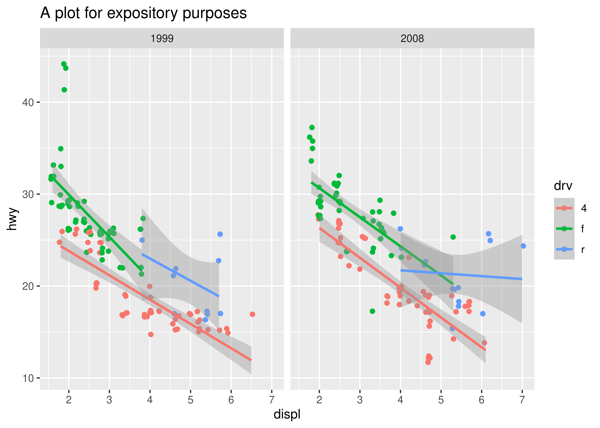
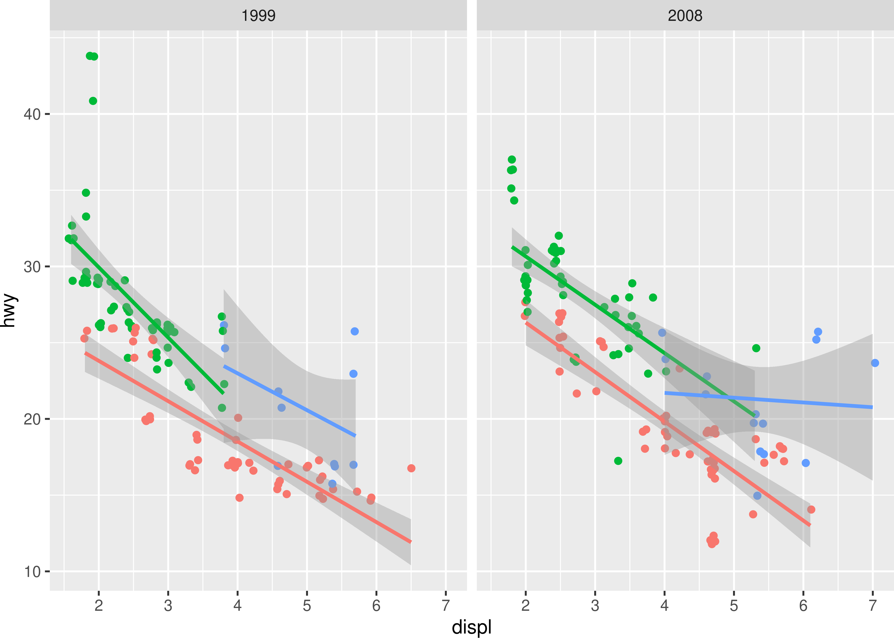
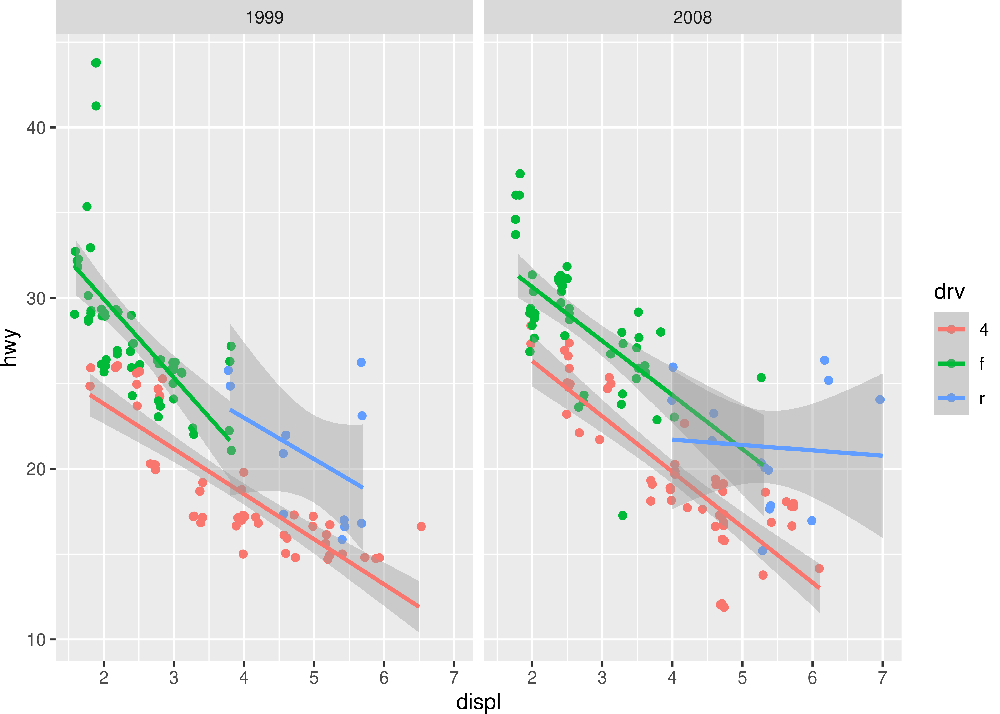
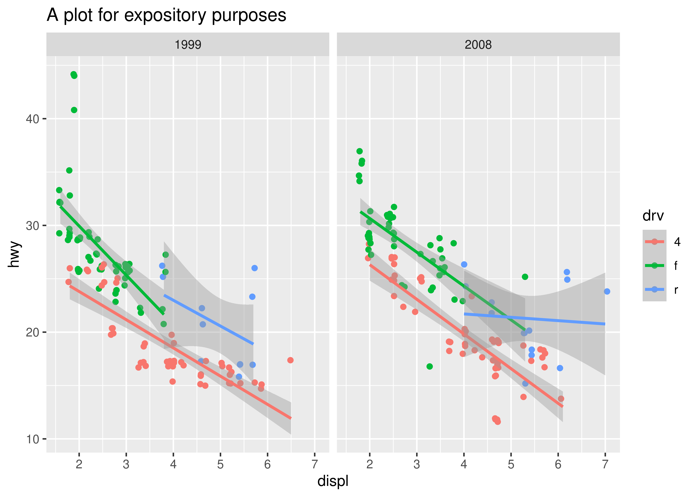

ggprint <- function(x) {
data <- ggplot_build(x)
gtable <- ggplot_gtable(data)
grid::grid.newpage()
grid::grid.draw(gtable)
return(invisible(x))
}2 ggplot2工作原理
- 本篇文章的内容来自于Internals of ggplot2，如果翻译有误，恳请指出！
- 文章介绍的内容基于 ggplot2 3.3.0 版本，跟目前的最新版本（3.5.1）差异巨大，本项目无精力处理两个版本兼容的问题，下面的除 ggproto 外的示例代码将全部不运行，预期运行结果将以图片或注释展示。
当从用户转为ggplot2的开发人员时，遇到挫折是很常见的，因为在 ggplot2 中，用户的交互方式与其底层工作原理截然不同。随着 ggplot2 的扩展变得越来越常见，在理解如何将的功能整合在一起上也会遇到挫折。本章将介绍 ggplot2 如何在 “幕后”工作。我们将重点放在系统的设计上，而不是其实现的技术细节，目的是让读者从概念上理解各部分是如何组合在一起的。首先，我们将概述绘制 ggplot 对象时的过程，然后深入细节，描述数据如何在整个过程中流动，并最终成为绘图中的可视化元素。
2.1 The plot method
在了解 ggplot2 的底层机制时，重要的是要认识到与绘图相关的几乎所有内容都是在打印 ggplot 对象时发生的，而不是在构建对象时发生的。例如，下面的代码中，对象 p 是绘图数据的抽象表示，如图层等。它并没有构造图像本身：
ggplot2 被设计成允许用户向图中添加新元素，而无需重新计算任何内容。这种设计的一个含义是，如果你想了解 ggplot2 的机制，你必须跟踪你的绘图是如何进入 plot()1的。你可以通过在控制台中输入 ggplot2:::plot.ggplot 来检查 ggplot 对象的打印方法，但本章我们将使用一个简化的版本。剥离到最基本的形式，ggplot2 的绘图方法与以下 ggprint() 函数的结构相同：
这个函数并不处理所有可能的情况，但它足以绘制上面指定的图表：
ggprint(p) 
在我们简化的打印方法的代码中，显示了四个不同的步骤：
首先，调用
ggplot_build()，这一步会准备每个图层的数据并整理成适合绘图的标准格式。其次，将准备好的数据传递给
ggplot_gtable()，并将其转化为存储在 gtable 中的图形元素（我们稍后再讨论 gtable 是什么）。第三，在 grid 软件包的帮助下，将 gtable 对象转换为图像。
第四，将原始 ggplot 对象隐形返回给用户。
这个过程揭示了 ggplot2 本身并不进行底层绘图：当创建了 gtable 对象后，它的责任就结束了。 gtable 包（实现了 gtable 类）也不进行任何绘制。 所有绘图工作都由 grid 软件包和激活的图形设备共同完成。 这是非常重要的一点，因为这意味着 ggplot2 或 ggplot2 的任何扩展都不会关心可视化输出的细枝末节。 相反，它的工作是将用户数据转换为一个或多个图形基元，如多边形、线、点等，然后将责任移交给 grid 包。
尽管严格来说并不正确，但我们将称这个过程为渲染过程。接下来的两个部分数据将沿着渲染过程向下推进，通过 build step（Section 2.2）和 gtable step（Section 2.3），最终将图形基元的集合传给 grid 。
2.2 The build step
正如上面讨论的，ggplot_build() 接受使用公共 API 构建的声明性表示，并通过准备数据以将其转换为图形基元来增强它。
2.2.1 数据准备
数据准备的第一步是获取每个图层的相关数据，并将其转换成可预测的格式。 图层数据可以通过以下三种方式提供：自己提供数据（由 geom 的 data 参数提供），继承 ggplot() 提供的全局数据，由一个函数提供，这个函数会在行使功能时返回一个data frame。 在所有三种情况下，图层数据都是一个data frame，它将传递给绘图布局，来协调坐标系和分面。 数据首先传递到绘图坐标系，坐标系可能会改变数据（但通常不会），然后传递到分面，分面会检查数据以确定绘图中应该有多少个面板以及如何组织这些面板。在这个过程中，每一个图层的数据都会增加一列名叫 “PANEL”的数据 。 这一列数据将（必须）在整个渲染过程中保留，用于将数据的每一行链接到最终绘图中的特定面板。
数据准备的第二步是将图层数据转换为经过计算的美学（aesthetic）值。 这包括在图层数据上评估来自 aes() 的所有美学表达式。 此外，如果没有明确给出，group美学值会从所有非连续美学值的交互中计算出来。 group美学和PANEL一样，是必须在整个处理过程中保留的特殊列。 例如，前面创建的p图只包含geom_point()指定的一个图层，在数据准备过程结束时，与该图层相关的前 10 行数据是这样的：
#> x y colour PANEL group
#> 1 1.8 29 f 1 2
#> 2 1.8 29 f 1 2
#> 3 2.0 31 f 2 2
#> 4 2.0 30 f 2 2
#> 5 2.8 26 f 1 2
#> 6 2.8 26 f 1 2
#> 7 3.1 27 f 2 2
#> 8 1.8 26 4 1 1
#> 9 1.8 25 4 1 1
#> 10 2.0 28 4 2 1这一步会在图层数据中添加两列数据：group和PANEL。PANEL列指定了哪些数据在哪一个绘图面板上（比如指定了分面变量year，该变量包含2000，2001，2008三个离散值，那么PANEL列就会保存哪些数据属于哪一年），group列指定了哪些数据属于一个组（也就是在绘图中看到的分组，比如在p中，颜色被指定为drv变量，那么group就会记录哪些数据属于哪一类drv）。
2.2.2 数据转换
图层数据转换为可预测的格式后，还需要进行一系列转换，直到转换为绘图所需的格式。
该过程的第一步是对数据中的列进行标度（scale）转换。 在这一阶段，任何标度中的 trans 参数都会产生影响，所有后续的渲染都将在这一转换后进行。 这就是在标度中设置位置变换（对x和y进行变换）与在坐标系中设置位置变换效果不同的原因。 如果在标度中指定变换，则变换会在任何其他计算之前应用，但如果在坐标系中指定变换，则变换会在这些计算之后应用。 例如，我们最初绘制的p图不涉及标度变换，因此图层数据在此阶段保持不变。 前三行如下所示：
#> x y colour PANEL group
#> 1 1.8 29 f 1 2
#> 2 1.8 29 f 1 2
#> 3 2.0 31 f 2 2相反，如果我们的绘图对象是 p + scale_x_log10()，并在处理过程中检查此时的图层数据，我们就会看到 x 变量已进行了适当的转换：
#> x y colour PANEL group
#> 1 0.255 29 f 1 2
#> 2 0.255 29 f 1 2
#> 3 0.301 31 f 2 2该过程的第二步是使用位置标度（position scales 即x和y）映射位置美学 (position aesthetic)，根据所涉及的位置标度类型（连续，离散，bins），映射过程会有所不同。 对于连续位置标度（例如我们示例中使用的标度），此时会应用 oob 参数中指定的出界函数，并删除图层数据中的 NA 值。 这对 p 没有什么影响，但如果我们绘制的是 p + xlim(2, 8)，则 oob 函数 – 本例中的 scales::censor() – 会用 NA 替换 2 以下的 x 值，如下图所示：
#> Warning: Removed 22 rows containing non-finite values (`stat_smooth()`).
#> x y colour PANEL group
#> 1 NA 29 f 1 2
#> 2 NA 29 f 1 2
#> 3 2 31 f 2 2对于离散位置标度，变化则更为复杂，原始数值会与用户提供的limits参数或 breaks参数相匹配，然后转换为整型数值。 最后，对于 bins 位置标度，首先使用 breaks 参数将连续数据切成 bins，然后将每个 bin 的位置设置为其范围的中点。 在这一阶段进行映射的原因是保持数据的一致性：无论使用哪种位置标度，在 stat 和 geom 计算中看起来都是连续的。 这一点非常重要，否则离散标度的闪避和抖动等计算都会失败。
在该过程的第三步中，数据被移交给统计变换（stat），由统计变换进行统计转换。程序如下：首先，统计变换可以检查数据并修改其参数，然后对数据进行一次性处理。接下来，按 “PANEL”和 “group”对图层数据进行拆分，并在数据重新组合之前计算统计数据。 一旦数据以新的形式重新组合，就会经过另一个美学映射过程。在这个过程中，使用 stat()（或旧的 ...var...符号）延迟计算的任何美学数据都会被添加到数据中。请注意，这就是为什么stat()表达式（包括用于在示例图p的geom_smooth()层中指定回归模型的公式）不能引用原始数据。此时，原始数据根本不存在。
举例来说，我们可以看一下图中的第二图层，它可以产生线性回归结果。在进行统计计算之前，该图层的数据只包含坐标以及所需的 “PANEL”和 “group”列。
#> x y colour PANEL group
#> 1 1.8 29 f 1 2
#> 2 1.8 29 f 1 2
#> 3 2.0 31 f 2 2在统计计算结束后，图层数据也会相应的改变：
#> x y ymin ymax se flipped_aes colour PANEL group
#> 1 1.80 24.3 23.1 25.6 0.625 FALSE 4 1 1
#> 2 1.86 24.2 22.9 25.4 0.612 FALSE 4 1 1
#> 3 1.92 24.0 22.8 25.2 0.598 FALSE 4 1 1此时，geom 接管了 stat 的工作（几乎）。它要做的第一件事就是检查数据、更新参数，并可能对数据进行第一次修改（与 stat 的设置相同）。这可能会对某些列进行重新参数化，例如将 x+width 改为 xmin+xmax。之后，位置调整将被应用，例如，重叠的条形图将被堆叠等。对于我们的示例图 p 来说，这一步是在图的第一层应用抖动，并对 x 和 y 坐标进行扰动：
#> x y colour PANEL group
#> 1 1.84 28.7 f 1 2
#> 2 1.77 29.1 f 1 2
#> 3 2.03 31.3 f 2 2接下来，位置标度将全部重置、重新训练并应用于图层数据。仔细想想，这绝对是必要的，因为，例如，堆叠会极大地改变其中一个坐标轴的范围。在某些情况下（例如在上面的直方图示例中），其中一个位置美学可能甚至要到统计计算之后才能获得，如果不对刻度进行重新训练，它就永远不会得到训练。
数据转换的最后一步是训练和映射所有非位置美学，即把映射的离散或连续输入转换成图形参数，如颜色、线型、大小等。此外，还将添加地形图中的任何默认美学，以便数据现在处于地形图的可预测状态。在最后一步，在构建步骤完成之前，stat 和 facet 都有最后一次机会使用它们的 “finish_data()”方法修改数据的最终映射形式。对于绘图对象 p 来说，图层数据最终状态的前几行是这样的：
#> colour x y PANEL group shape size fill alpha stroke
#> 1 #00BA38 1.83 29.1 1 2 19 1.5 NA NA 0.5
#> 2 #00BA38 1.79 29.2 1 2 19 1.5 NA NA 0.5
#> 3 #00BA38 1.99 30.7 2 2 19 1.5 NA NA 0.52.2.3 输出
ggplot_build()的返回值是一个包含ggplot_built类的列表结构。它包含计算数据以及一个Layout 对象，该对象包含转换过的坐标系和分面信息。此外，它还包含一个原始绘图对象的副本，使用经过转换的标度。
2.3 The gtable step
ggplot_gtable()的目的是获取 build step 的输出，并在 gtable 软件包的帮助下将其转化为可以使用grid绘制的对象。此时，负责进一步计算的主要元素是几何对象、坐标系、分面和主题。统计变换和位置调整已经不再发挥作用。
2.3.1 渲染面板
首先数据会转换成他们的图形表示，分两步进行：首先，将每个图层转换为图形对象列表（grobs）。与统计变换一样，转换是通过数据分割进行的，首先按 “PANEL”分割，然后按 “group”分割，出于性能考虑，几何对象 可能会拦截这种分割。虽然很多数据准备工作已经完成，但在这一步中，几何对象 还会对数据进行一些额外的转换，这种情况并不少见。其中最关键的部分是位置数据的转换和归一化。这是由坐标系完成的，虽然这通常只意味着根据坐标系的限制对数据进行归一化，但也可能包含更为激进的转换，如将直角坐标转换为极坐标。这样做的结果是为每个图层生成一个gList对象列表，该列表与切面布局中的每个面板相对应。之后，分面开始组装不同的面板。它首先从图层中收集每个面板的信息，包括主题相关的设置和坐标轴信息，并将所有这些合并到每个面板独立的 gList 中。然后，它会根据计算出的面板布局将所有面板排列到一个 gtable 中。对于大多数绘图来说，这很简单，因为只有一个面板，但对于使用了 facet_wrap()的绘图来说，这可能会相当复杂。在这一阶段的处理过程结束后，我们的示例图 p 看起来是这样的：

2.3.2 添加导图
ggplot2 中有两种类型的导图：坐标轴和图例。正如我们的图 p ，此时坐标轴已经完成了渲染，并与面板组装在一起，但图例仍然缺失。渲染图例是一个复杂的过程，首先要为每个标度渲染一个图例。然后，如果美学映射允许，各个标度的图例会在每个图层之间进行组合，合并成最终的图例。最后输出的是一个 gtable，其中包含根据主题和导图生成的样式。创建完成后，会根据 legend.position主题设置将导图 gtable 添加到主 gtable 中。至此，我们的绘图示例很多方面都已完成：唯一缺少的就是标题。

2.3.3 添加修饰
剩下的工作就是添加标题、副标题、标题和标签，以及添加背景和页边距，这样最终的gtable就完成了。
2.3.4 输出
至此，ggplot2 已准备好移交给 grid。我们的渲染过程大致相当于下面的代码，最终结果如上所述，是一个 gtable：
p_built <- ggplot_build(p)
p_gtable <- ggplot_gtable(p_built)
class(p_gtable)
#> [1] "gtable" "gTree" "grob" "gDesc"下面的代码显示了我们的绘图 p 的 gtable：
p_gtable
#> TableGrob (13 x 15) "layout": 22 grobs
#> z cells name grob
#> 1 0 ( 1-13, 1-15) background rect[plot.background..rect.741]
#> 2 1 ( 8- 8, 5- 5) panel-1-1 gTree[panel-1.gTree.612]
#> 3 1 ( 8- 8, 9- 9) panel-2-1 gTree[panel-2.gTree.627]
#> 4 3 ( 6- 6, 5- 5) axis-t-1-1 zeroGrob[NULL]
#> 5 3 ( 6- 6, 9- 9) axis-t-2-1 zeroGrob[NULL]
#> 6 3 ( 9- 9, 5- 5) axis-b-1-1 absoluteGrob[GRID.absoluteGrob.631]
#> 7 3 ( 9- 9, 9- 9) axis-b-2-1 absoluteGrob[GRID.absoluteGrob.631]
#> 8 3 ( 8- 8, 8- 8) axis-l-1-2 zeroGrob[NULL]
#> 9 3 ( 8- 8, 4- 4) axis-l-1-1 absoluteGrob[GRID.absoluteGrob.639]
#> 10 3 ( 8- 8,10-10) axis-r-1-2 zeroGrob[NULL]
#> 11 3 ( 8- 8, 6- 6) axis-r-1-1 zeroGrob[NULL]
#> 12 2 ( 7- 7, 5- 5) strip-t-1-1 gtable[strip]
#> 13 2 ( 7- 7, 9- 9) strip-t-2-1 gtable[strip]
#> 14 4 ( 5- 5, 5- 9) xlab-t zeroGrob[NULL]
#> 15 5 (10-10, 5- 9) xlab-b titleGrob[axis.title.x.bottom..titleGrob.694]
#> 16 6 ( 8- 8, 3- 3) ylab-l titleGrob[axis.title.y.left..titleGrob.697]
#> 17 7 ( 8- 8,11-11) ylab-r zeroGrob[NULL]
#> 18 8 ( 8- 8,13-13) guide-box gtable[guide-box]
#> 19 9 ( 4- 4, 5- 9) subtitle zeroGrob[plot.subtitle..zeroGrob.737]
#> 20 10 ( 3- 3, 5- 9) title titleGrob[plot.title..titleGrob.736]
#> 21 11 (11-11, 5- 9) caption zeroGrob[plot.caption..zeroGrob.739]
#> 22 12 ( 2- 2, 2- 2) tag zeroGrob[plot.tag..zeroGrob.738]正如我们所希望的那样，最终的绘图看起来与之前的完全相同：
grid::grid.newpage()
grid::grid.draw(p_gtable)
2.4 ggproto 简介
Section 2.1 到 Section 2.3 的重点是如何按顺序构建 ggplot ，而有意对执行这项工作的编程对象含糊其辞。
所有的ggplot2对象都是使用面向对象编程的ggproto系统构建的。这是一个历史性的意外：ggplot2 最初使用 proto 进行面向对象编程，但由于 proto 系统的局限性，需要一个正式的扩展机制，这就成了一个问题。我们试图将 ggplot2 转换到其他系统（如 R6），但这种尝试是困难的，而创建一个专门针对 ggplot2 需求的面向对象系统被证明是可行的解决方案。
如果你想编写 ggplot2 的扩展程序，了解 ggproto 面向对象编程系统是非常重要的。我们将在 Chapter 3 和 Chapter 4 中遇到 ggplot2 使用的 ggproto 对象的情况。与更著名的 R6 系统一样，ggproto 使用引用语义，允许继承和访问父类方法。虽然 ggproto 并不强制执行这些设计原则，但它们对于理解如何在 ggplot2 中使用该系统至关重要。为了说明这些概念，本节将以简化的形式介绍 ggproto 的核心机制。
2.4.1 ggproto 对象
创建一个新的ggproto对象需要使用ggproto()函数，该函数的第一个参数是新类的名称，第二个参数是新类继承的另一个ggproto对象。例如，我们可以用下面的命令创建一个ggproto对象，尽管它没有任何有用的功能：
NewObject <- ggproto(
`_class` = NULL,
`_inherits` = NULL
)按照惯例，ggproto 对象使用 “UpperCamelCase”命名，每个单词都以大写字母开头。省略`_class`和`_inherits`参数的名称也是惯例，因此该命令的常规形式如下：
NewObject <- ggproto(NULL, NULL)如果我们打印这个对象，就会发现它确实是一个 ggproto 对象，但没有显示其他信息。
NewObject <ggproto object: Class gg>2.4.2 创建新类
要创建一个新的 ggproto 类，唯一需要做的是提供一个类名作为 ggproto() 的第一个参数。定义一个新类的最简单命令是这样的
NewClass <- ggproto("NewClass", NULL)NewClass变量仍然指向一个 ggproto 对象，我们可以通过打印它来验证它是否具有所需的类名：
NewClass<ggproto object: Class NewClass, gg>然而，到目前为止，我们所做的唯一一件事就是创建一个指定类的对象。NewClass对象什么也不做。要创建一个有用的 ggproto 类，我们需要在定义类时提供一个变量和方法列表。在这里，“变量”用于存储与对象相关的数据，而 “方法”则是可以使用对象中存储的数据的函数。变量和方法的构造是一样的，从用户的角度来看，它们没有什么不同。
为了说明这一点，我们将创建一个名为 Person 的新类，用来存储和操作一个人的信息。我们可以通过向 ggproto() 函数提供名称/值对来实现这一点：
Person <- ggproto("Person", NULL,
# fields
given_name = NA,
family_name = NA,
birth_date = NA,
# methods
full_name = function(self, family_last = TRUE) {
if(family_last == TRUE) {
return(paste(self$given_name, self$family_name))
}
return(paste(self$family_name, self$given_name))
},
age = function(self) {
days_old <- Sys.Date() - self$birth_date
floor(as.integer(days_old) / 365.25)
},
description = function(self) {
paste(self$full_name(), "is", self$age(), "years old")
}
)现在，Person类有三个变量，分别对应人的 given_name, family_name和birth_date。它还拥有三个方法：full_name()方法是一个构造人的全名函数，使用的惯例是将给名放在前面，姓氏放在后面；age()方法以年为单位计算人的年龄；description()方法打印出人的简短描述。
打印对象会显示与其相关的变量和方法：
Person<ggproto object: Class Person, gg>
age: function
birth_date: NA
description: function
family_name: NA
full_name: function
given_name: NAPerson这个 ggproto 对象本质上是类的模板，我们可以用它来创建单个人的特定记录（在@sec-ggproto-instances 中讨论）。如果你熟悉其他面向对象编程系统，你可能会期待一些不同的东西：通常新类的定义有一个专门的构造函数。ggproto的一个怪癖是ggproto()不会这样做：相反，类的构造函数本身就是一个对象。
定义方法时需要注意的另一点是使用 self 作为第一个参数。这是一个特殊参数，用于让方法访问与 ggproto 对象相关的变量和方法（示例参见 Section 2.4.4）。这个参数的特殊地位在打印 ggproto 方法时显而易见：
Person$full_name<ggproto method>
<Wrapper function>
function(...) !!call2(name, !!!args)
<Inner function (f)>
function(self, family_last = TRUE) {
if(family_last == TRUE) {
return(paste(self$given_name, self$family_name))
}
return(paste(self$family_name, self$given_name))
}这个输出结果似乎有点出人意料：当我们之前定义 full_name() 时，我们只提供了作为 “内部函数”的代码。现在的情况是，ggproto() 自动将我的函数封装在一个封装函数中，该封装函数调用我的代码作为内部函数，同时确保使用了适当的 self 定义。当打印该方法时，控制台会同时显示封装函数（通常没什么意义）和内部函数。这种格式的输出出现在 Chapter 3 和 Chapter 4 中。
2.4.3 创建新的实例
既然已经定义了 Person 类，我们就可以创建该类的实例了。方法是将一个 ggproto 对象作为第二个参数传递给 ggproto()，而不在第一个参数中指定一个新的类名。例如，我们可以如下创建新对象 Thomas 和 Danielle ，它们都是 Person 类的实例：
将 NULL 指定为第一个参数，将指示 ggproto() 不定义一个新类，而是创建第二个参数中指定类的新实例。由于 Thomas 和 Danielle 都是 Person 类的实例，它们自动继承了 age(), full_name() 和 description() 方法：
Thomas$description()[1] "Thomas Lin Pedersen is 39 years old"Danielle$description()[1] "Danielle Jasmine Navarro is 47 years old"2.4.4 创建子类
在前面的示例中，我们创建了一个全新的类 Person。在实践中，你几乎永远不需要这样做：相反，你可能会使用现有的 ggproto 对象创建一个子类。为此，您可以在调用 ggproto() 时指定子类的名称及其继承对象：
# define the subclass
NewSubClass <- ggproto("NewSubClass", Person)
# verify that this works
NewSubClass<ggproto object: Class NewSubClass, Person, gg>
age: function
birth_date: NA
description: function
family_name: NA
full_name: function
given_name: NA
super: <ggproto object: Class Person, gg>上面的输出显示，NewSubClass现在提供了自己的类，它继承了我们之前创建的 Person对象的所有变量和方法。但是，这个新的子类并没有添加任何新功能。
在创建子类时，我们经常要添加新的变量或方法，并覆盖一些已有的变量或方法。例如，假设我们要将 Royalty定义为Person的子类，并添加与相关皇室成员的 rank及其统治的territory相对应的变量。由于皇室成员通常以头衔和领地而不是姓氏和名字来称呼，因此我们还需要更改 full_name() 方法的定义方式：
Royalty <- ggproto("Royalty", Person,
rank = NA,
territory = NA,
full_name = function(self) {
paste(self$rank, self$given_name, "of", self$territory)
}
)Royalty 对象现在定义了一个 Person 类的子类，它从 Person 类继承了一些变量（given_name、family_name、birth_date），并提供其他变量（rank、territory）。它从 Person 类继承了 age() 和 description() 方法，但它重写了 full_name() 方法。
我们可以使用 ggproto() 创建 Royalty 类的实例，如下所示：
Victoria <- ggproto(NULL, Royalty,
given_name = "Victoria",
family_name = "Hanover",
rank = "Queen",
territory = "the United Kingdom",
birth_date = as.Date("1819/05/24")
)因此，当我们调用 Victoria 的 full_name() 方法时，输出结果会使用 Royalty 类中指定的方法，而不是 Person 类中定义的方法：
Victoria$full_name()[1] "Queen Victoria of the United Kingdom"值得注意的是，当我们调用 description() 方法时会发生什么。该方法继承自 Person，但该方法的定义调用了 self$full_name()。尽管 description() 是在 Person 中定义的，但在此处，self 仍然指的是 Victoria，她仍然是 Royalty。这意味着继承的 description() 方法的输出将使用为子类定义的 full_name() 方法：
Victoria$description()[1] "Queen Victoria of the United Kingdom is 205 years old"创建子类有时需要访问父类及其方法，我们可以借助 ggproto_parent() 函数来实现。例如，我们可以定义一个 Police子类，该子类与 Royalty子类一样包含一个 rank变量，但只将该rank用作 description()方法的一部分：
Police <- ggproto("Police", Person,
rank = NA,
description = function(self) {
paste(
self$rank,
ggproto_parent(Person, self)$description()
)
}
)在这个例子中，Police 子类的 description() 方法被定义成明确引用 Person 父类的 description() 方法。通过使用 ggproto_parent(Person, self) 的这种方式，我们能够引用父类内的方法，同时仍然保留 self 的适当定义。和之前一样，我们将创建一个特定的实例并验证这如预期般工作：
John <- ggproto(NULL, Police,
given_name = "John",
family_name = "McClane",
rank = "Detective",
birth_date = as.Date("1955/03/19")
)
John$full_name() [1] "John McClane"John$description()[1] "Detective John McClane is 69 years old"由于我们将在下文讨论的原因，ggprot_parent() 的使用在 ggplot2 源代码中并不普遍。
2.4.5 ggproto 代码风格
由于 ggproto 是一个最小化的类系统，专门为 ggplot2 设计，不涉及其他任何内容，因此我们要认识到 ggproto 在 ggplot2 中的使用方式是特定的，它存在的目的是支持 ggplot2 的扩展系统，您不太可能在编写 ggplot2 扩展以外的任何环境中遇到 ggproto。考虑到这一点，了解 ggplot2 如何使用 ggproto 是有必要的：
ggproto 类被有选择地使用。在 ggplot2 中并不全面使用 ggproto ，只有部分功能是基于 ggproto 的，因此不建议在您的扩展中创建全新的 ggproto 类。作为扩展开发者，您永远不需要创建全新的 ggproto 对象，而是继承 ggplot2 提供的某些 ggproto 类。Chapter 3 和 Chapter 4 将详细介绍如何做到这一点。
ggproto 类是无状态的。除了用于渲染的少数内部类之外，ggplot2 中的 ggproto 类都被认为是”无状态的”。这意味着 ggplot2 的类在它们被构建之后，它们不会改变。这打破了基于引用的类（其中的方法通常可以安全地改变对象的状态）的常见用法。在 ggplot2 中改变类的状态是不安全的。如果您的代码违反了这个原则，并在渲染过程中改变了 Stat 或 Geom 的状态，那么绘制已保存的 ggplot 对象将会影响 所有 该 Stat 或 Geom 的实例（即使那些在其他图表中使用的实例），因为它们都指向同一个 ggproto 父对象。考虑到这一点，您应该只在两种情况下指定 ggplot2 中 ggproto 对象的状态。首先，您可以在创建对象时指定状态：这是可以接受的，因为此状态应该在任何实例之间共享。其次，您可以通过在别处管理的 params 对象来指定状态。正如您将在后面看到的（参见 Section 4.2 和 Section 4.3），大多数 ggproto 类都有一个
setup_params()方法，在那里可以检查数据并计算和存储特定的属性。ggproto 类有简单的继承。由于 ggproto 类实例是无状态的，调用定义在其他类内部的方法，而不是显式地从该类继承，是相对安全的。这就是为什么在 ggplot2 源代码中很少调用
ggproto_parent()函数的原因。例如，GeomErrorbar中的setup_params()方法被定义为：
#| eval: false
#| #| label: ggproto_style_1
GeomErrorbar <- ggproto(
# ...
setup_params = function(data, params) {
GeomLinerange$setup_params(data, params)
}
# ...
)这种模式通常比使用 ggproto_parent() 更易读，而且因为 ggproto 对象是无状态的，所以也同样安全。